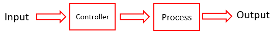
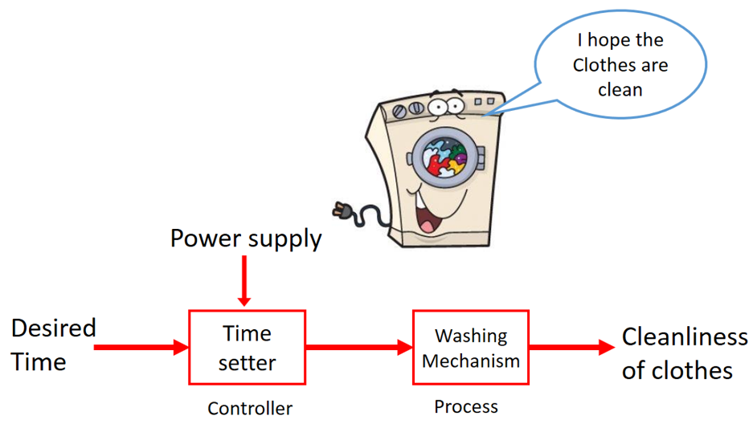

HOME BLOG EBOOKS ABOUT CONTACT SHOP
An Open loop system is a system in which output has no bearing on the controlling action. In other words, in an Open loop system, the output is neither measured nor fed back for comparison with the input. This simply means that in an Open loop system there is no mechanism to correct the output if it goes out of track. Thus the accuracy of the output in an Open loop system is completely dependent on the accuracy of the input we provide and the calibration of the system. The Open loop control systems have a major drawback; the output of the system is adversely effected the presence of disturbances. This is because the changes in the output due to disturbances are not corrected by the feedback path. So any necessary changes need to be made manually and since the nature of disturbances aren’t always the same, it is quite difficult to maintain the accuracy in the output.

Due to these reasons, the practical applications of Open loop control systems are minimal and used only in places where the input-output relation is quite clear and the disturbances (internal and external) are minimum.
One good example of a practical Open loop system is your washing machine. Soaking, washing, rinsing in the washing machine operate on a time basis. The machine does not measure the output i.e. the cleanliness of the clothes .
